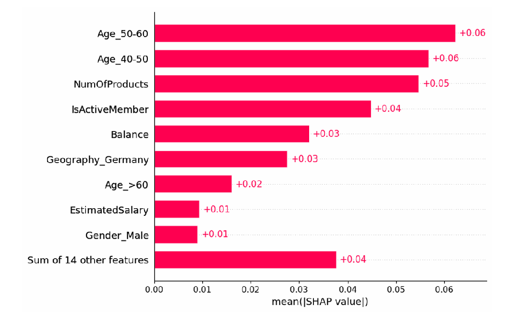
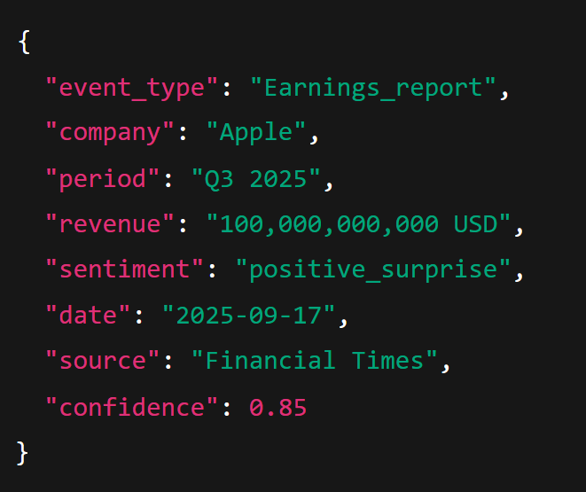

Bank Churn Prediction
Predicción de abandono de clientes bancarios con machine learning
Anomaly detection in time series
Detección de anomalías en precios de acciones mediante redes neuronales
FinTracker
Extracción de eventos en noticias financieras mediante PLN (proyecto en curso)
Bank Churn Prediction
Este proyecto consistió en el desarrollo de un modelo predictivo para anticipar cuándo un cliente de un banco es más propenso a abandonar la entidad. Partimos de un dataset con 10.000 registros que incluía información demográfica, financiera y de comportamiento de los clientes (edad, crédito, balance, productos contratados, etc.).
| RowNumber | CustomerId | Surname | CreditScore | Geography | Gender | Age | Tenure |
|---|---|---|---|---|---|---|---|
| 1 | 15634602 | Hargrave | 619 | France | Female | 42 | 2 |
| 2 | 15647311 | Hill | 608 | Spain | Female | 41 | 1 |
| 3 | 15619304 | Onio | 502 | France | Female | 42 | 8 |
| 4 | 15701354 | Boni | 699 | France | Female | 39 | 1 |
| 5 | 15737888 | Mitchell | 850 | Spain | Female | 43 | 2 |
El trabajo comenzó con un análisis exploratorio de datos (EDA) para entender las variables más influyentes en la fuga de clientes y detectar desequilibrios en las clases (20% de clientes que abandonan frente al 80% que permanecen). Posteriormente, aplicamos técnicas de ingeniería de características como la categorización de edades, codificación de variables categóricas y reducción de dimensionalidad mediante PCA, lo que mejoró la interpretabilidad de los modelos.
Para la fase de predicción, entrenamos y comparamos distintos algoritmos de machine learning —incluyendo Regresión Logística, Random Forest, SVM y Naive Bayes— utilizando validación cruzada y métricas como precisión, recall, F1-score y ROC-AUC, con especial atención al desbalanceo de clases. El objetivo fue optimizar el modelo para identificar con la mayor precisión posible a los clientes que probablemente abandonarían el banco, aportando así información valiosa para diseñar estrategias de retención.
Además, se incorporó un apartado de interpretabilidad de modelos, con el fin de entender qué características tenían mayor peso en la predicción (como la actividad del cliente, el número de productos contratados o el historial de reclamaciones). En conclusión, este proyecto combinó análisis de datos, técnicas de preprocesamiento y distintos enfoques de clasificación para construir un sistema predictivo aplicable en el sector bancario, cuyo fin último es ayudar a reducir la pérdida de clientes y mejorar la toma de decisiones estratégicas.
Anomaly Detection in Time Series
Este proyecto tuvo como objetivo identificar anomalías en series temporales de precios bursátiles, tomando como referencia datos históricos de empresas tecnológicas (Apple, Tesla, Nvidia, Google, Microsoft y Salesforce) extraídos de Yahoo Finance. El reto principal era detectar comportamientos atípicos en el mercado sin disponer de etiquetas previas, por lo que optamos por un enfoque basado en modelos de reconstrucción.
Se aplicó un preprocesamiento exhaustivo: normalización de variables financieras (open, close, high, low, volumen), construcción de secuencias de 30 días con enfoque multivariante y preparación de tensores listos para entrenamiento en redes neuronales. A nivel de modelado, se implementaron diferentes arquitecturas de deep learning para comparar su desempeño:
- Autoencoder, capaz de capturar dependencias temporales y reconstruir series con alta precisión.
- Autoencoder, con un enfoque más ligero y eficiente, que mostró buena generalización incluso en datos no vistos.
- Transformers Autoencoder, explorado para capturar patrones de largo alcance, aunque presentó limitaciones en la detección de anomalías locales.
- La estrategia consistió en entrenar los modelos para reconstruir las series y marcar como anomalías aquellos puntos cuyo error de reconstrucción superaba un umbral definido. Los resultados más sólidos provinieron de los modelos LSTM y GRU, que lograron detectar anomalías en periodos de alta volatilidad como la crisis del COVID-19, la guerra de Ucrania o episodios de inflación global.
- En conclusión, este proyecto demostró el potencial de los autoencoders recurrentes para la detección de anomalías en datos financieros, ofreciendo una herramienta valiosa para el análisis de riesgos y la toma de decisiones en entornos de alta incertidumbre.
FinTracker
Este proyecto tiene como objetivo desarrollar un prototipo de detección automática de eventos financieros relevantes a partir de noticias y comunicados corporativos. Para acotar el alcance, nos centraremos en un conjunto reducido de tipos de eventos de alto impacto: fusiones y adquisiciones, cambios en la directiva (ej. nombramiento o dimisión de CEO/CFO) y anuncios de resultados financieros.
El sistema propuesto combinará varias técnicas de procesamiento de lenguaje natural (PLN). En primer lugar, se aplicará un clasificador de documentos para identificar si un texto contiene alguno de los eventos de interés. Posteriormente, se realizará extracción de entidades con el fin de reconocer y vincular las partes involucradas (empresas, directivos, montos, periodos temporales). A partir de esta información, se estructurará el evento en una representación clara (tipo de evento, entidades y roles). Además, se explorará la generación de un título o resumen breve en una sola frase, que sintetice la noticia de manera comprensible y directa.
Como fuentes de datos, se emplearán noticias financieras accesibles públicamente (p. ej., NewsAPI, GDELT) y reportes oficiales como los formularios 8-K de la SEC, que proporcionan ejemplos fiables de eventos corporativos.
La evaluación del sistema se llevará a cabo mediante métricas estándar como precisión, exhaustividad y F1-score, tanto en la detección de eventos como en la extracción de entidades. También se revisará manualmente la calidad de los títulos generados para asegurar su utilidad práctica. Con este enfoque limitado pero concreto, el proyecto busca construir un prototipo factible y evaluable dentro del semestre, que demuestre la aplicabilidad del PLN en la extracción de información financiera estructurada.
PySpark Tips Prediction (NYC Yellow Taxi)
Este proyecto se basa en el análisis del famoso dataset de viajes en taxi amarillo de Nueva York, una de las bases de datos de movilidad urbana más utilizadas en ciencia de datos. Contiene millones de registros reales con información sobre cada trayecto: hora y lugar de recogida, destino, distancia recorrida, forma de pago, importe total de la carrera y la propina que deja el pasajero.
El reto principal consiste en predecir el valor de la propina (tip_amount) a partir de estas variables, aplicando modelos de Machine Learning de regresión. Para ello, se han implementado diferentes enfoques —desde Regresión Lineal hasta técnicas más avanzadas como Árboles de Decisión, Random Forest y Gradient Boosting— con el objetivo de comparar su rendimiento en términos de precisión y robustez.
El sistema se evalúa con métricas como el Error Cuadrático Medio (RMSE), el Error Absoluto Medio (MAE) y el Coeficiente de Determinación (R²), lo que permite identificar qué algoritmos ofrecen las predicciones más fiables.
Más allá del aspecto técnico, este proyecto tiene aplicaciones prácticas muy claras:
- Conductores que desean anticipar sus ingresos con mayor precisión.
- Pasajeros interesados en conocer de antemano el coste total de su viaje.
- Empresas de movilidad y transporte que buscan optimizar su servicio mediante el análisis predictivo de datos.
En definitiva, se trata de un caso de uso real que combina la potencia del análisis de datos a gran escala con técnicas modernas de aprendizaje automático, demostrando cómo la inteligencia artificial puede aportar valor tanto a profesionales como a usuarios finales.
C/C++ • Reflejos
Reflejos es una aplicación desarrollada para medir tiempos de reacción frente a distintos estímulos, con el objetivo de capturar y analizar la rapidez de respuesta humana de manera precisa. El proyecto se diseñó con una arquitectura modular que integra interfaz gráfica, controlador, conexión con hardware y almacenamiento de datos, lo que lo convierte en un sistema flexible, escalable y fácil de mantener.
La aplicación se organiza en varias capas:
- Interfaz gráfica (GUI): permite la interacción directa del usuario y la visualización de resultados.
- Controlador (Controller): gestiona la lógica principal y la comunicación entre módulos.
- Módulo Micro: preparado para integrarse con microcontroladores o sensores externos.
- Base de datos (DB): almacena los tiempos de reacción y permite conservar historiales.
Gracias a este diseño, el proyecto puede adaptarse a distintos contextos y ampliar sus funcionalidades, como integrar sensores biométricos, variar los tipos de estímulos o incluir nuevos análisis estadísticos.
Las aplicaciones potenciales son diversas: educación, como herramienta de evaluación cognitiva; deporte, en entrenamientos que requieren rapidez de reflejos; psicología y salud, para estudios de atención y procesamiento; e investigación científica, como soporte en experimentos que demandan medición precisa de respuestas.
Desde un punto de vista técnico, el proyecto demuestra experiencia en programación orientada a objetos, diseño de interfaces y arquitectura modular en Python, así como la capacidad de conectar software con hardware en tiempo real.
En conjunto, Reflejos es una demostración práctica de cómo una idea sencilla puede convertirse en una herramienta útil y versátil, uniendo análisis de datos, experiencia de usuario y posibilidades de integración con dispositivos físicos.